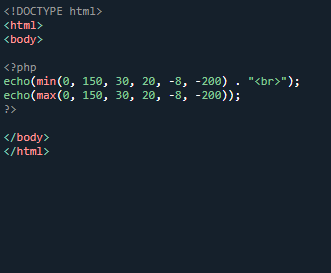
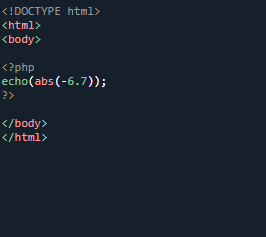
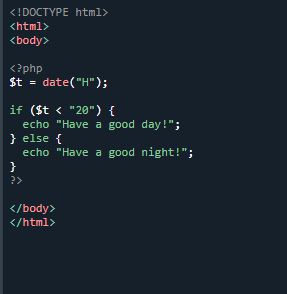

PHP Conditional Statements
Very often when you write code, you want to perform different actions for different conditions. You can use conditional statements in your code to do this.
In PHP we have the following conditional statements:
if statement - executes some code if one condition is true
if...else statement - executes some code if a condition is true and another code if that condition is false
if...elseif...else statement - executes different codes for more than two conditions
switch statement - selects one of many blocks of code to be executed
